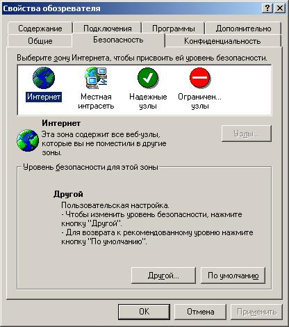
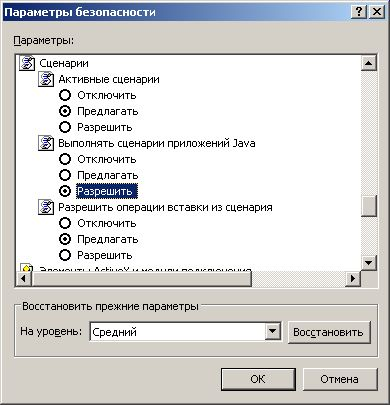
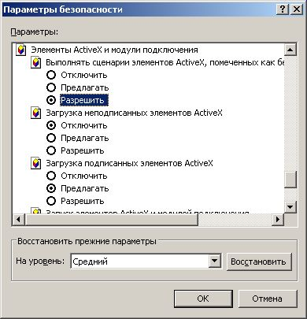

Что такое сценарии JavaScript
и как включить их поддержку в браузере
JavaScript это язык сценариев, позволяющих сделать интернет-страницу интерактивной, т.е. "умеющей общаться" с пользователем.
Сценарии JavaScript загружаются с интернет-сайта на компьютер пользователя и выполняются на нем. Как и любой другой файл, загружаемый с незнакомого сайта, сценарий JavaScript может содержать исполняемый код, способный навредить пользователю – например, открыть несанкционированный доступ к его конфиденциальной информации. Именно поэтому в браузерах предусмотрена возможность отключения выполнения сценариев JavaScript.
Однако, учитывая что JavaScript в той или иной степени используют сегодня почти все сайты, выключение поддержки JavaScrip в браузере сильно ограничивает возможности браузера и лишает пользователя возможности использовать многие интерактивные возможности предлагаемые современными сайтами.
ВНИМАНИЕ!
С выключенной поддержкой
JavaScript данный сайт вообще работать не будет (так-как представляет собой веб-приложение)!
Включение поддержки JavaScript в браузерах Microsoft Internet Explorer
- Войдите в меню "Сервис" ("Tools") навигационной панели Microsoft Internet Explorer, а затем выберите пункт "Свойства обозревателя" ("Internet Options") .
- Выберите закладку "Безопасность" ("Security") .

- Нажмите на кнопку "Другой"
- В окне параметры безопасности найдите настройки сценариев и разрешите
"Выполнять сценарии приложений Java"
- В том же окне найти параметры безопасности элементов ActiveX и
модулей подключения, разрешить "Выполнять сценарии элементов ActiveX,
помеченных как безопасные"
- Для сохранения настроек нажмите кнопку "OK".
Включение поддержки JavaScript в браузере Opera 10
Чтобы включить JavaScript нажмите F12 (или щелкните левой кнопкой мыши по изображению буквы "О" в красном прямоугольнике в левом верхнем углу экрана, затем выберите пункт "Настройки -> Быстрые настройки"). Поставьте галочку перед надписью "Включить JavaScript".Второй способ. Нажмите Ctr+F12 (или также щелкните левой кнопкой мыши по изображению буквы "О" в красном прямоугольнике в левом верхнем углу экрана, затем выберите пункт "Настройки -> Общие настройки..."). В появившемся диалоговом окне выберите вкладку "Содержимое" и отметьте влажком пункт "Включить JavaScript". Нажмите кнопку "ОК".